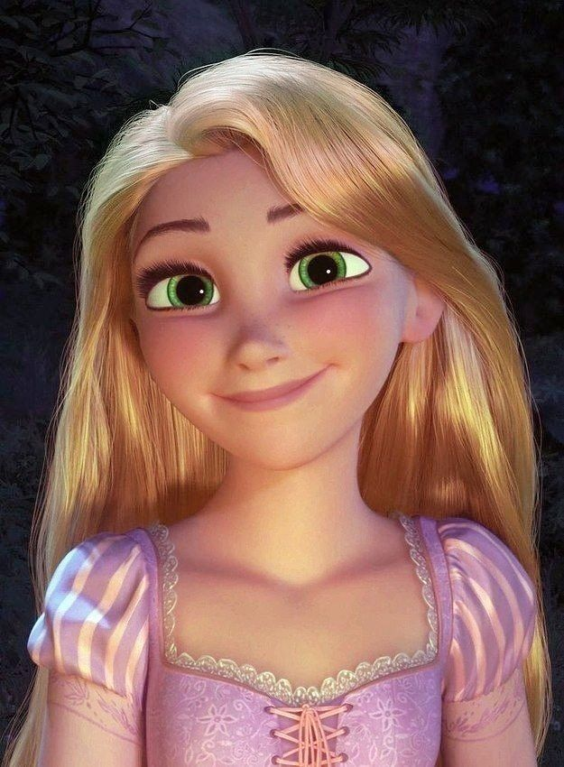
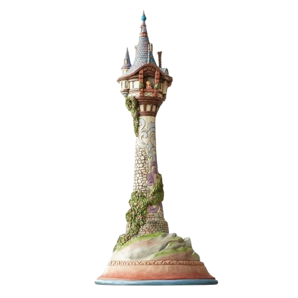
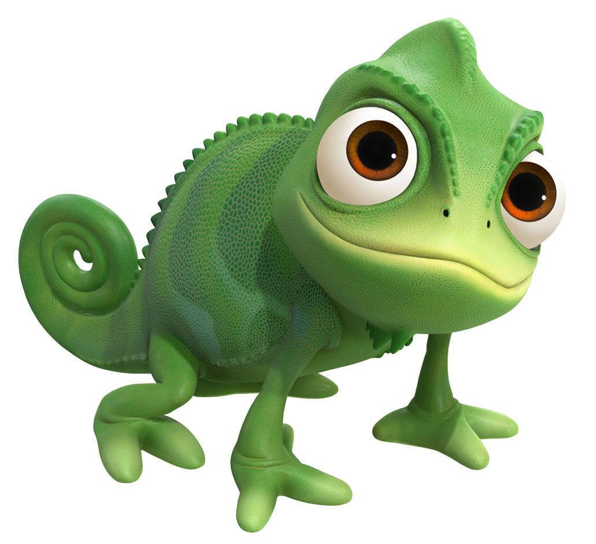
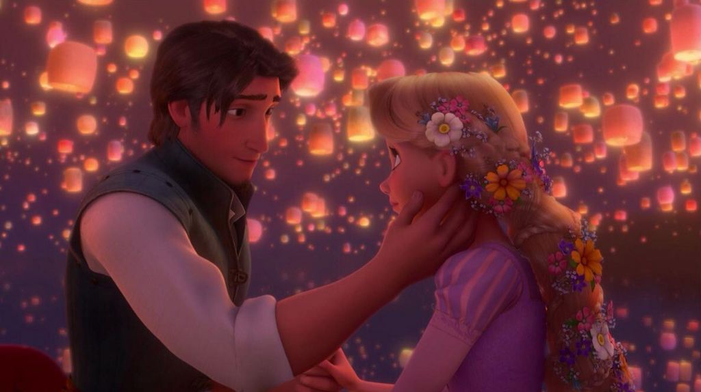
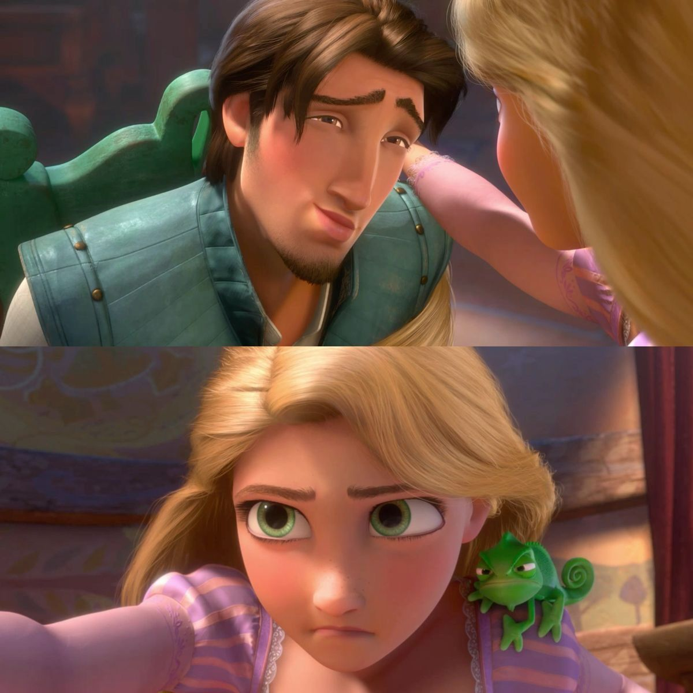
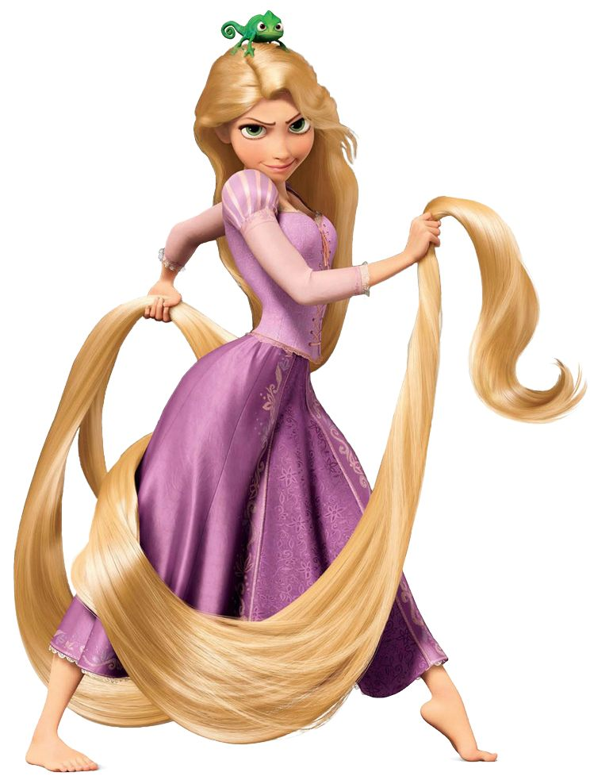
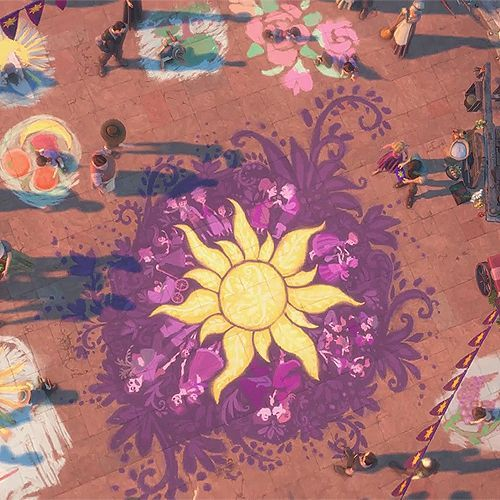
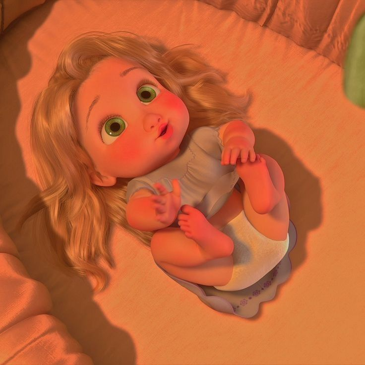
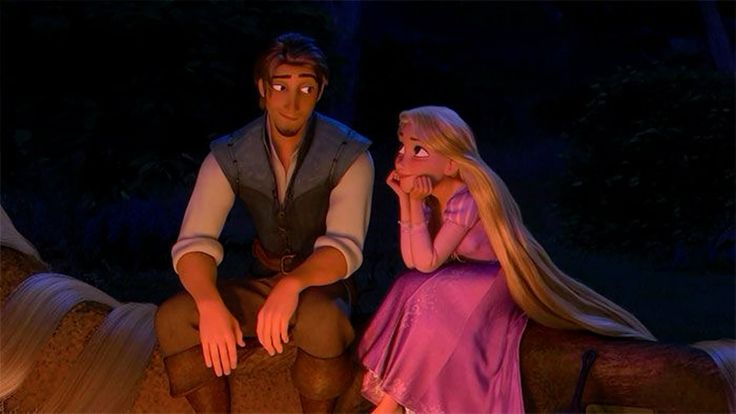
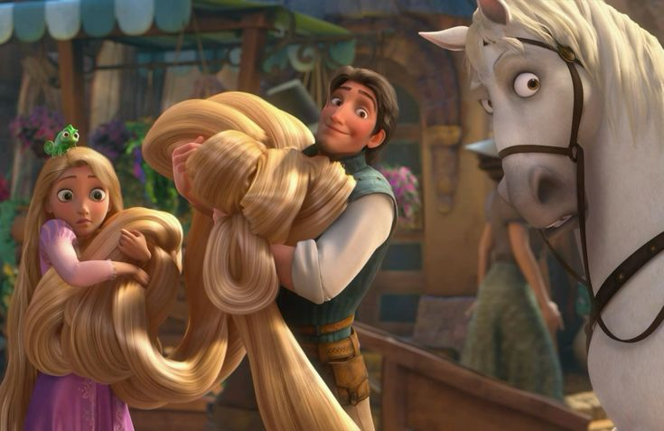

Historia


Origen en el cuento clásico
Rapunzel es una joven que fue entregada a una hechicera llamada Madre Gothel antes de nacer. Sus padres, al robar una planta del jardín de la hechicera, prometieron entregarla como castigo. La niña creció encerrada en una torre sin puertas ni escaleras. Su largo cabello dorado servía como única forma de acceso a la torre. Con el tiempo, un príncipe la descubre y ambos planean escapar para comenzar una nueva vida.
Historia en la película de Disney
En la versión de Disney, Rapunzel es una princesa que fue robada por Madre Gothel cuando era un bebé. La reina había sido salvada gracias a una flor mágica que otorgaba juventud, y ese poder pasó al cabello de Rapunzel. Madre Gothel la secuestró para conservar su juventud y la crió en una torre aislada del reino.
Rapunzel creció sin conocer el mundo exterior, acompañada únicamente por su pequeño amigo

Pascal. A pesar de su encierro, desarrolló muchos talentos como la pintura, la música y la lectura. Siempre fue curiosa, imaginativa y soñadora.Su vida en la torre
Durante años, Rapunzel pasó sus días explorando actividades dentro de la torre: pintaba murales, tocaba guitarra, cocinaba y observaba el reino desde la ventana. Aunque parecía feliz, en el fondo sentía que algo faltaba en su vida. Cada año veía unas misteriosas luces flotando en el cielo el día de su cumpleaños, sin saber que en realidad eran linternas lanzadas por el rey y la reina en su honor.
Sus sueños y gustos
El mayor sueño de Rapunzel era salir de la torre y descubrir el origen de aquellas luces brillantes. Deseaba conocer el mundo, hacer amigos y encontrar su verdadera identidad. Le gusta pintar, cantar, ayudar a los demás y descubrir cosas nuevas. Es optimista, creativa y tiene una gran capacidad para ver lo mejor en las personas.
Rapunzel y Flynn Rider
Su vida cambia cuando conoce a Flynn Rider (Eugene Fitzherbert), un ladrón que llega accidentalmente a la torre. Al principio su relación es divertida y algo conflictiva, pero poco a poco se convierte en una amistad sincera que luego evoluciona en amor. Flynn ayuda a Rapunzel a descubrir la verdad sobre su pasado, y ella le enseña el valor de la honestidad y la bondad. Juntos enfrentan peligros y logran que Rapunzel regrese a su verdadero hogar.
Más información en la Wiki oficial de Rapunzel .
Información
Características
- Cabello extremadamente largo y dorado con poderes mágicos.
- Personalidad dulce, bondadosa y optimista.
- Gran talento artístico.
- Valiente al enfrentar la verdad sobre su pasado.
- Soñadora e imaginativa.
Top 3 momentos más icónicos
- Cuando Madre Gothel dice: "¡Rapunzel, deja caer tu cabello!"
- Cuando observa las linternas flotando por primera vez.
- Cuando descubre que es la princesa perdida del reino.
Ficha técnica
| Dato | Información |
|---|---|
| Edad | Aproximadamente 17-18 años |
| Peso | 50 - 52 kg |
| Peso del cabello | 35 - 40 kg (aproximado en versión animada) |
| Estatura | 1.55 m |
| Primera aparición | Cuento de los Hermanos Grimm (1812) |
| Debilidades | Ingenuidad inicial y exceso de confianza. |
| Alias | La princesa perdida, Flor del Sol |
Registro de fans
Galería






